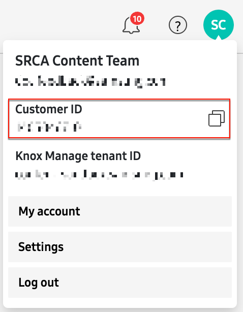

Create a basic Setup/Dynamic profile
Last updated September 23rd, 2025
This tutorial will guide you through the steps of creating a Setup/Dynamic profile for the first time, and is designed for IT admins who are new to Knox Configure.
In this tutorial, you’ll learn how to do the following:
- Launch the Knox Configure console.
- Generate a trial license.
- Add devices to your account through a device reseller.
- Create a Setup/Dynamic profile with basic enrollment settings.
- Assign profile to devices.
Step 1: Launch Knox Configure
After you sign into the Knox Admin Portal, you can launch the Knox Configure console to begin creating profiles. If you’re using Knox Configure for the first time, you may need to enable the service if it is missing from the left navigation pane. To enable the service:
- Go to your Knox Admin Portal settings by clicking your account icon in the upper right corner, then click Settings.
- On the Settings page, click SHOW/HIDE SERVICES.
- Select KNOX CONFIGURE, then click CONFIRM.
After the service is enabled, you’ll see Knox Configure appear in the left navigation pane. Click this link to launch the Knox Configure console.
Step 2: Generate a trial license.
Before creating a Setup/Dynamic profile, you’ll need a Knox Configure license. New customers can generate a trial license upon signing up for Knox services, which allows usage for 3 months on up to 30 devices.
To generate a trial license:
- Click Licenses in the left navigation pane.
- On the Licenses page, click the ACTIONS button near the top right corner of the page, then click Get a license.
- Select Knox Configure Setup (Staggered) if you want to create a Setup profile, or Knox Configure Dynamic if you want to create a Dynamic profile, then click GENERATE TRIAL LICENSE.
The Licenses page will update to show the name of the license, the available license seats, and its expiration date.
Step 3: Add devices to your account
The next thing you’ll need to do in your new console is add devices to your account. The process for adding devices to Knox Configure is similar to that of other Knox services, which involves adding devices through an approved Samsung Knox reseller. To do this:
-
Locate a Samsung Knox Reseller in your region and purchase compatible devices.
-
Provide the reseller with your Knox Customer ID, which can be found by clicking your account icon in the upper right corner. This will allow them to upload devices to your account after purchase.

Once a reseller uploads devices to your account, your device IMEI numbers appear in the Devices page. If this is a first-time upload for the reseller, then you’ll need to approve the devices after they’ve been uploaded. To do this:
-
Click Devices in the left navigation pane, then click the UPLOADS tab.
-
In the table, you’ll see a Pending status for all new reseller uploads. Click View to review the upload details, then click APPROVE ALL DEVICES.
-
In the Approve new upload pop-up window, click APPROVE to add the devices to your account.
After approval, a pop-up window appears, allowing you to set reseller preferences for the specific reseller who uploaded your device(s). This step is not required for creating a basic Setup/Dynamic profile. Click BACK TO UPLOADS to return to the UPLOADS tab where you’ll see the status change from Pending to Approved.
Step 4: Create a Setup/Dynamic profile
After you’ve generated a trial license and added devices to your account through a reseller, you’re ready to create your first profile. To do this, click Profiles from the left navigation pane, then click CREATE NEW PROFILE > Setup/Dynamic profile in the top-right corner of the page. This opens the profile creation wizard, which consists of the following tabs:
Profile info

The Profile info tab is where you’ll set up your basic profile information and specify your target device type. On this tab, you’ll need to do the following:
-
Enter a unique Name (mandatory) and Description (optional) for the profile.
-
Select the profile’s target device type. For Setup/Dynamic edition, you can create profiles that configure phones/tablets or wearable devices1.
-
If you are creating a profile for phones or tablets, you’ll need to select whether your target devices are Secured by Knox devices, or Other Samsung devices (not secured by Knox).
- If target devices are secured by Knox, then you’ll need to specify their Knox version. By default, the latest Knox version (3.4 or above) is selected.
- If target devices have a lower Knox version, select it from the list.
-
Click NEXT:CONFIGURATION MODE to save your basic information and move to the next tab.
Configuration mode

The Configuration mode tab is where you define the profile edition and the device’s intended operating mode. To do this:
-
Select the Knox Configure edition that you want to use (Setup edition or Dynamic edition).
-
For Dynamic edition profiles, you have the option to select your device operation mode:
-
Normal mode allows the device to run as a phone, tablet, or wearable as intended, but with specific apps, settings, and content applied. Users can add new apps and change settings after initial device configuration. Selecting this mode grants you access to all available profile configuration settings.
-
ProKiosk mode restricts device operation to a single application or group of applications, and limits unwanted device activity and usage. ProKiosk mode devices have fixed home screens and require passcodes to enter and exit the device. Selecting this mode grants you access to profile configuration settings unique to ProKiosk mode.
-
-
For Setup edition and Accessory edition profiles, you can only create Normal mode profiles.
- For Setup edition profiles only, you also have the option to uninstall the Knox Cloud agent after device configuration. This option removes the Configuration service app from the device after it is enrolled.
-
-
Once you’ve selected your edition and configuration mode, click NEXT: ENROLLMENT INFO to save your information and move to the next tab.
Enrollment Info

The Enrollment Info tab lets you customize the information that appears on your devices during the Knox Configure enrollment process. As you configure these settings, you can also preview your changes on the panel to the right.
This tutorial will only go over the mandatory fields required for creating a basic profile. You can review all available options on the Create profiles page and apply additional settings as required.
On this tab, do the following:
- Enter your Company name in the provided field, then optionally add your company information by selecting Add address.
- Provide a Phone number and Email address. Note that these fields are mandatory for all profiles.
- Once you’re finished with your enrollment info, click NEXT: CONFIGURE SETTINGS to save and move to the next tab.
Configure settings

The Configure settings tab is where you can customize your profile settings like apps, content, and restrictions. In this tutorial, you’ll learn how to apply a custom wallpaper and add a Google Play app to your profile.
As you configure these settings, you can also preview your changes on the panel to the right. For descriptions of all other available options in this tab, please review Configure profile settings .
To configure your profile with a wallpaper and app, do the following:
-
In the Branding settings quick access bar, click Theme & Wallpaper
-
In the right-panel, under WALLPAPER > Default Home screen wallpaper, click SELECT.

-
Upload a wallpaper image to your profile. You’ll see a preview of the wallpaper on your device after uploading.
-
In the Branding settings quick access bar, click Add apps, widgets, and content, then in the right-panel, click ADD APPLICATIONS TO PROFILE.

-
On the following page, click ADD NEW APPLICATION.
-
If you have an app APK, you can upload it by clicking UPLOAD APPLICATION. Else, you can click ADD FROM GOOGLE PLAY if you know the app’s Google Play URL.
-
Once you have the app APK or URL added, click UPLOAD. On the next page, select the app(s) you want to add to the profile, then click ADD. The app(s) will be added to your profile.

-
After you’ve customized your profile settings, click NEXT: SUMMARY to move to the last tab.
Summary

On the Summary tab, you can review the details of your profile, and make edits or take additional actions before saving and assigning it to your devices.
To make changes to your profile, click EDIT beside each tab name or configuration setting group if you want to make changes to your profile. This will take you back to the respective profile creation wizard tab or setting.

If you don’t need to make changes to your profile, click SUBMIT, then in the next window, you can click SUBMIT to save the profile without assigning it to devices, or click ASSIGN DEVICES & SUBMIT to create the profile and assign it to your devices.

Step 5: Assign profile to devices
After clicking ASSIGN DEVICES & SUBMIT in the previous step, you’ll need to select which devices you want to assign the profile to. To do this:
-
On the Select devices page, select devices from the list, or use the search bar to find devices by name or Device ID or Custom ID, then click SELECT LICENSE.

-
If you currently have an active trial or commercial license key, the license name appears in the list. If you don’t already have a trial license, you can generate one by clicking GET A LICENSE.
-
Select your trial license, then click SUBMIT. Your new profile is assigned to your device(s).

-
With the profile assigned to your devices, your end users simply have to turn on their new or factory reset device, connect to a Wi-Fi or mobile network, and go through the initial device setup.
After the device is setup, your Knox Configure profile is automatically downloaded onto the device, immediately configuring the device with your custom profile settings and apps. This process of downloading and installing the Knox Configure profile during device setup is also known as an “Out-of-box-Experience” (OOBE) setup.
Next steps and additional reading
Now that you’ve created your first profile and assigned it to a device, you can explore more advanced topics in our How-to guides section. The following pages are recommended for additional reading:
- About profiles — Get an in-depth explanation of the differences between Setup, Dynamic, and Accessory profiles, and learn about the correlation between Profiles, Licenses, and Knox Configure “editions”.
- Configure profile settings — Review complete descriptions of every profile configuration option available in the profile wizard’s Configure settings tab.
- Manage profiles — Learn how you can perform profile settings, update a device’s profile, and delete profiles.
-
Knox Configure supports Tizen OS wearable devices, up to Samsung Galaxy Watch 3. ↩︎
On this page
Is this page helpful?